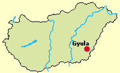
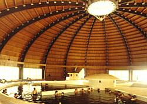
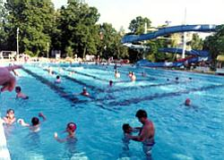
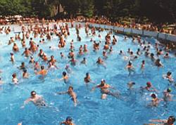
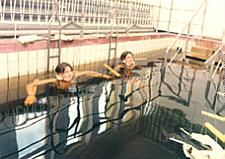
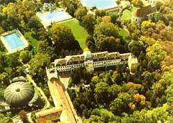
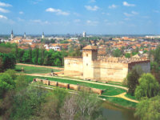
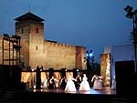
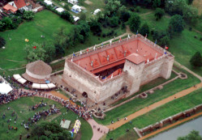
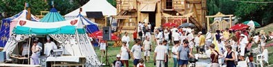

|
|
|
Lage: Die Stadt
Gyula (sprich: Djuhla) hat 35.000 Einwohner und liegt 220 km
südöstlich von Budapest. Gyula ist die letzte
Ortschaft vor der rumänischen Grenze. Gyula liegt im
südöstlichen Teil der Großen Ungarischen
Tiefebene am Ufer des Flusses Körös. Brunnen
versorgen die Bassins des in einem herrlichen Naturpark gelegenen
Burgbades mit alkali-, jod- und bromhaltigem Wasser. Es
ist ein unter den schönsten
Heilbädern in Ungarn in dem 8,5 Hektar großen
Schlosspark. Der Park ist zugleich ein Naturschutzgebiet. |
 |
|
 |
Das Heilwasser ist
reich an Alkalihydrogen-Carbonat und Chloriden. Das
Thermalwasser wurde 1969 zum Heilwasser, und das Bad 1971 zum Heilbad
erklärt. Seit 1985 ist die Umgebung des Thermalbades ein Naturschutzgebiet
und Gyula ein Heilort.
Die Quelle liegt in einer Tiefe von 2.400 m und das
Thermalwasser hat auf der Oberfläche noch immer eine Temperatur
von 72°C. |
Chemische Zusammensetzung:
Kalium, Natrium (K+, Na+ 683,0 mg/l), Ammonium (NH4+ 5,2mg/l), Kalzium
Ca2+ 10,7 mg/l, Magnesium (Mg2+ 1,3 mg/l), Eisen (Fe2+ 0,1 mg/l),
KATIONEN: 700,3 mg/l, Hidrokarbonat (HCO3 1708,8 mg/l), Nitrat (NO3
Null), Chlorid (Cl- 88,0 mg/l), Bromid (Br- 0,1 mg/l), Fluorid (F - 1,0
mg/l), Jodid (I- 0,4 mg/l), Sulfat (SO42- 12,8 mg/l), Phosphat (PO43-
1,0 mg/l), ANIONEN: 1811,3 mg/l, pH 7,95, Freie Kohlensäure
(CO2 35,0 mg/l), Metaborsäure (HBO2 15,0 mg/l),
Metasiliziumsäure (H2SiO3 70,0 mg/l).
|
Indikationen:
Das Wasser hat ausgezeichnete Heilwirkung. Gute
Ergebnisse werden durch Badekur erzielt mit diesem Heilwasser bei der
Behandlung chronischer Erkrankungen des Bewegungsapparates und der
Glieder, Rehabilitationsbehandlungen nach den Unfällen, bei
lokalen neurotischen Beschwerden, in der Rehabilitationsbehandlung und
postoperatorischen Therapien, in der Behandlung von
Entzündungen Bechterew-Erkrankungen und
gynäkologischen Erkrankungen.
|
Kontraidikationen:
Hoher Blutdruck, Tumorerkrangungen, fiebrige Zustände,
Herzerkrankungen, akute Entzündung, Epilepsie.
|
Für eine
Trinkkur ist
das Heilwasser besonders gut geeignet für die Behandlung von
Magenbeschwerden und Entzündungen der Verdauungsorgane.
|
|
 |
Das Thermalbad:
Für
die kur- und therapiesuchenden Gäste stehen im Burgbad insgesamt 20
Wasserbecken zur Verfügung: 11 davon sind Thermal-Für die
kur- und therapiesuchenden Gäste stehen im Burgbad insgesamt 20
Wasserbecken zur Verfügung: 11 Heilbecken, Kinderbecken, 2
Strand-, 2 Schwimm-, und 1 Saunabecken. Die empfohlene Badezeit im
Thermalwasser beträgt täglich dreimal 30 Minuten.
Die 11 Thermalbecken dürfen nur über 14
jährige in Anspruch nehmen. Im Burgbad finden jedoch alle Altersklassen ihr
Betätigungsfeld: |
|
 |
Für die Kleinen stehen die
Kinderbecken, ein Spielpark und eine kleine "Autobahn" bereit.
Jugendliche und Erwachsene finden ihre Freude bei
Strandvolleyball, Strandfußball, Riesenrutsche, Minigolf, Sauna,
Solarium, Wasserbecken im Freien und in geschlossenen Räumen. |
|
 |
Angebotene Therapien:
Schlammpackung, Magnetotherapie, Galvanobad,
Inhalationsbehandlung, Kohlensäurebad, Streckbad,
Unterwassermassage, Heilschwimmen und Massage.
|
|
Sehenswürdigkeiten
in Gyula |
|
|
|
 |
Die lange historische
Vergangenheit von Gyula reicht bis in die Siedlungszeit der Magyaren
zurück. Gyula besitzt zwei einmalige Besonderheiten: die
einzige in Mitteleuropa noch existierende Ziegelburg (gebaut von 1405
bis 1445) und das Burgbad |
 |
|
|
Viele berühmte Künstler
waren in Gyula geboren, so z.B. Franz Erkel, der Komponist der ungarischen Nationalhymne,
deren Trauermelodie in der deutschen Nationalhymne nicht zu
überhören ist.
Kulturelle Veranstaltungen:
Für Ihre Unterhaltung werden laufend wechselnde
kulturhistorische
Programme organisiert, so z.B. ein Theaterfestival in den
Somermonaten. |
 |
|
 |
Berühmter war aus
deutscher Sicht der Goldschmied und
Kunstmaler
Albrecht Dürer, der einst aus Gyula nach
Nürnberg zog. Vor seiner
Auswanderung nach Nürnberg hieß er noch
"Ajtósi Béla" und wird heute in
Ungarn "Ajtósi-Dürer" genannt. Ajtósi
ist die Übersetzung von
Dürer bzw. Thürer, wie er seinen Namen zuerst auf
Deutsch schrieb, was
heute Türsteher bedeutet. |
|
Die
Gyulaer Wurst
ist eine bekannte Landesspezialität in Ungarn.
Jährlich
einmal im Herbst findet die Wurstwoche statt, dabei geht es um
die
Wette, wer diese Wurstspezialität am besten macht. |
 |
|
Nützliche
Internetadressen in und über Gyula |
|
|
Burgbad - Das einzige Thermalbad in Ungarn in einem tatsächlichen
Schlosspark.
|
|
Burg Gyula - Die Burg konnte nie eingenommen werden, es gab jedoch
Eigentums-übertragungen nach Verhandlungen. Ausstellung in 24
Zimmern, Burgschlosserei, wöchentliche Falknervorführungen.
|
und
|
Burgtheater von Gyula
|
|
Gedenkhaus Ferenc Erkel
|
|
Wurstfabrik
|
|
Kolbász- bzw. Wurstmuseum
|
|
Rezept der Gyulaer Wurst
|
|
Schnapsfabrik von Gyula mit Probierstube
|
|
Festival- und Programmkalender
|
|
| |
|
| |
|
| |
| |
Ungarn-Tourist Team

|
| |
 |
| |
|